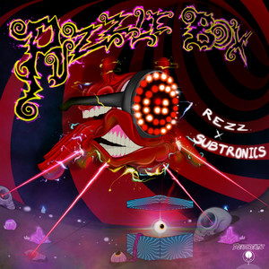
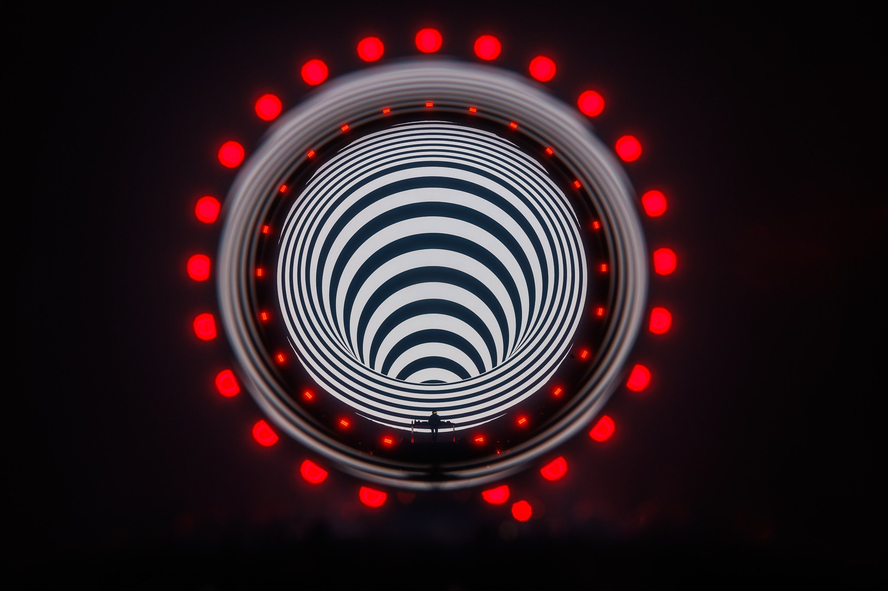
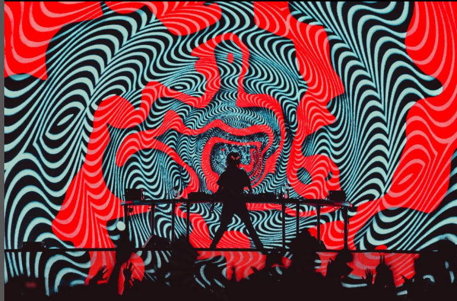
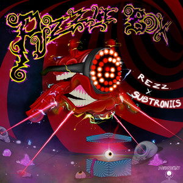
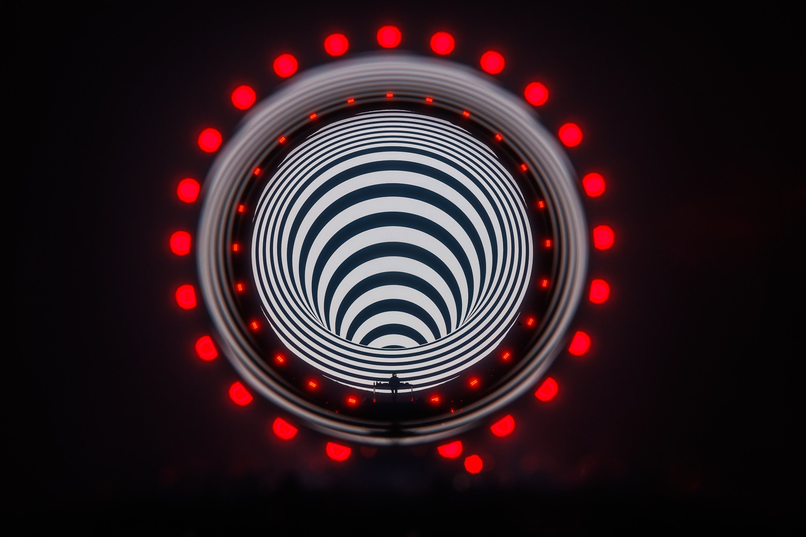
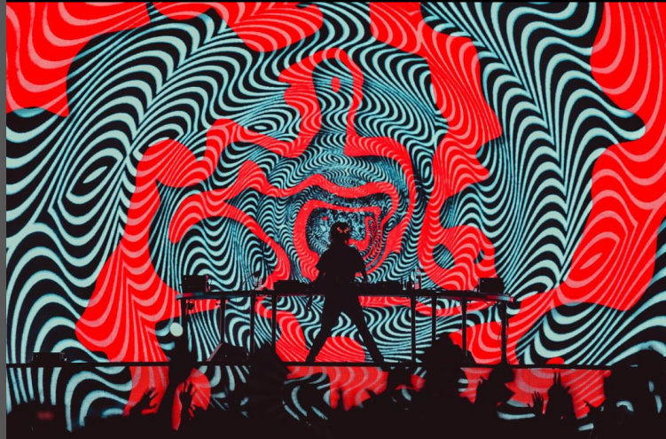

Music
Latest album experience — tracklist highlights and where to listen.
SPIRAL
Slow, hypnotic bass + industrial textures — a dark cinematic ride.
Tracklist (Highlights)
- Orbit03:11
- Chemical Bond03:35
- Let Me In03:48
- Spiral03:12
- Vortex03:29
“A hypnotic journey into controlled chaos.”
Album Atmosphere
Spiral is designed as an immersive listening experience. Slow tempos, deep basslines, and repeating patterns create a hypnotic and intense mood throughout the album.
The album blends sound and visuals, making it feel cinematic and powerful both live and in headphones.
SPIRAL VISUALS
Visual moments inspired by REZZ’s latest album Spiral. Dark stages, red lights, and hypnotic atmospheres.
.jpg)
 





The visuals surrounding Spiral reflect REZZ’s hypnotic sound. Red lighting, dark stages, and repeating patterns transform the music into a fully immersive visual experience.
Spiral is more than sound — it is a visual language. Each performance transforms music into motion, light, and emotion.
Tickets
Experience REZZ live — hypnotic visuals, deep bass, and immersive performances around the world.
Live Shows
World Tour • Updated Dates
Secure your spot for upcoming REZZ performances. Each show delivers a powerful fusion of sound, visuals, and atmosphere.
View TicketsWhat to Expect
- Immersive Visuals
- Deep Hypnotic Bass
- Dark Cinematic Atmosphere
- Festival & Arena Shows
- Limited Tickets Available